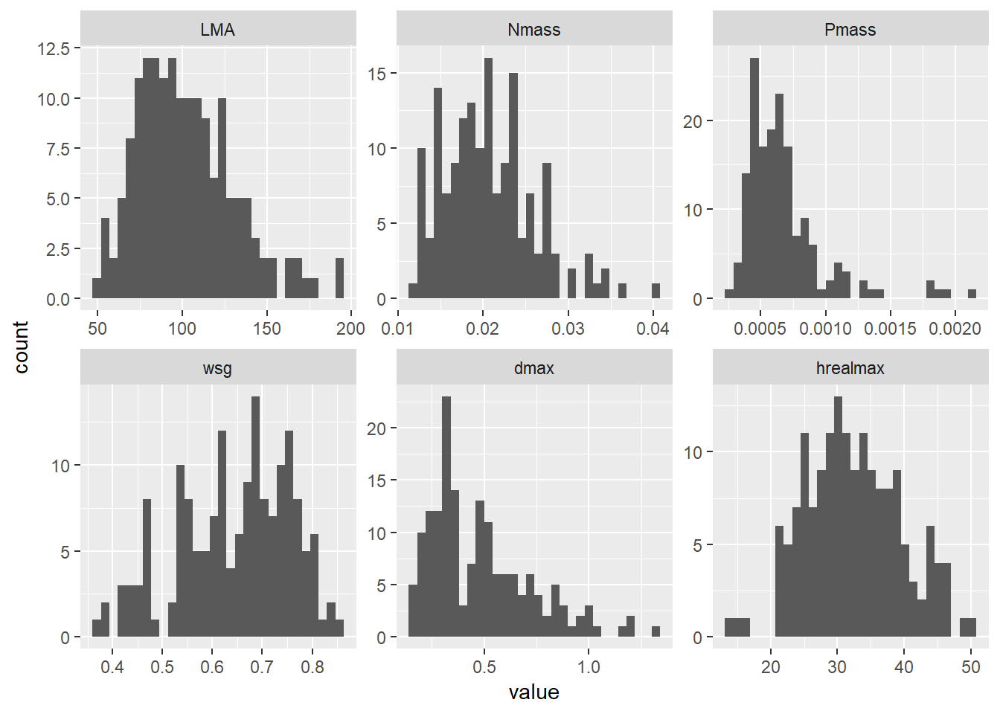
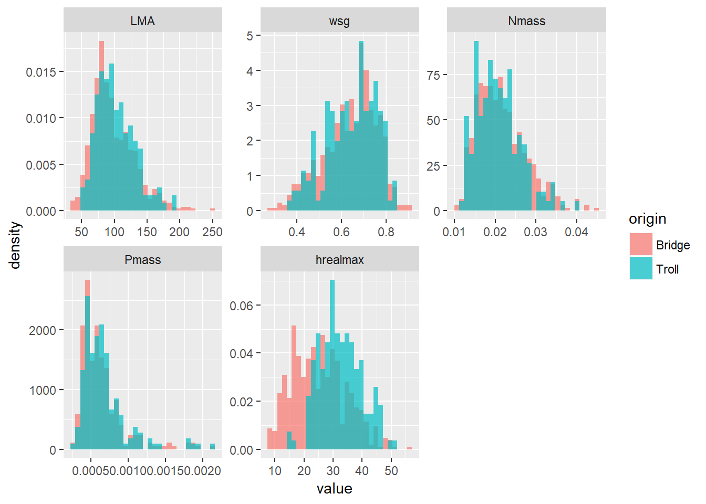
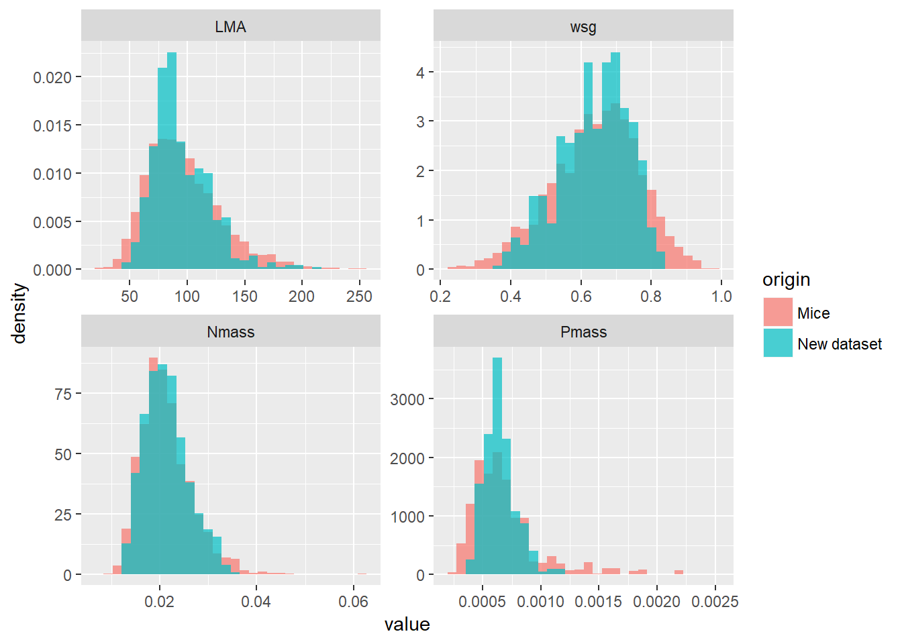
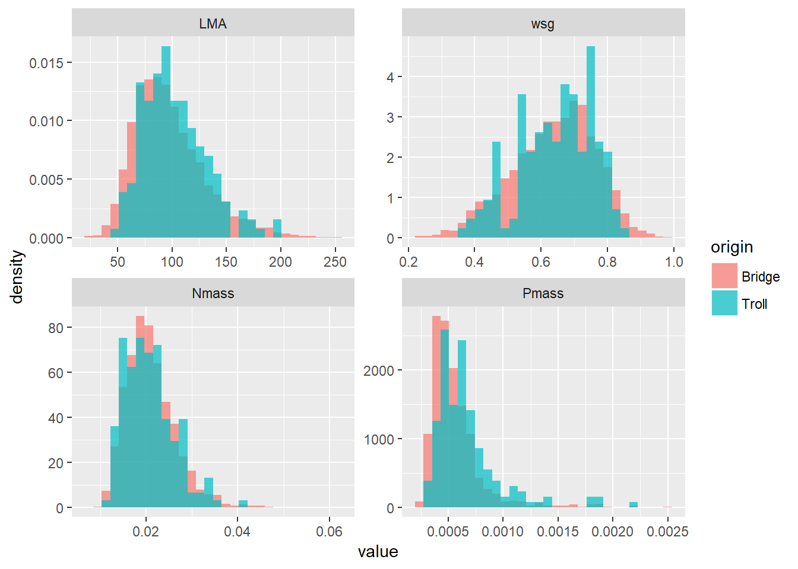

14 Datasets used
14.1 The BRIDGE trait database
We used the BRIDGE trait database (Baraloto et al. (2010), Baraloto et al. (2012)) which was further completed by the Toulouse EDB team ((???), (???) XXX REF). The BRIDGE dataset contains measurements for ten leaf and stem traits, with a total of 4709 individuals. One of the strengths of BRIDGE is that XXX REF plots were sampled exhaustively, thus providing an exceptional representation of the diversity and functional composition for >10cm dbh trees. However, another feature of the BRIDGE dataset is that the plots sampled are tropical rainforest: the dataset contains numerous species with a majority of rare (>4 observations) and a minority of highly dominant (> 200 observations) species.We used six individual-level traits and characteristics, namely: LMA, Nmass, Pmass, wsg, H, d ((???)). Trait distributions are shown in ??.
n_species <- c(0,0,0,0,0,0)
traits <- c("LMA","Nmass","Pmass","wsg","Height","dbh")
for(i in 1:length(traits)){
col <- which(names(bridge2) == traits[i])
n_species[i] <- bridge2[which(!is.na(bridge2[,col])),"species"] %>% unique %>% length
}
total <- bridge2 %>% filter(!is.na(LMA) &
!is.na(Nmass)&
!is.na(Pmass)&
!is.na(wsg)&
!is.na(Height)&
!is.na(dbh))
completerows <- total %>% nrow
completesp <- total %>% select(species) %>% unique %>% nrow
totalwP <- bridge2 %>% filter(!is.na(LMA) &
!is.na(Nmass)&
!is.na(wsg)&
!is.na(Height)&
!is.na(dbh))
completerowsP <- totalwP %>% nrow
completespP <- totalwP %>% select(species) %>% unique %>% nrow
totalrow = c("Total","entities\ with\ complete\ observations","\ -\ ", completerows, "\ -\ ", completesp)
totalrowP = c("LMA, N, wsg","entities\ with\ complete\ observations\ (Pmass\ excluded)","\ -\ ", completerowsP, "\ -\ ", completespP)
tabs <- bridge2 %>%
select(species,LMA, Nmass, Pmass, wsg, Height, dbh) %>%
reshape2::melt(id.var = "species",
variable.name = "trait") %>%
mutate(isna = if_else(is.na(value), 1, 0))%>%
group_by(trait) %>%
summarize(missing = sum(isna), complete = sum(if_else(isna == 0, 1, 0))) %>%
mutate(trait = paste0('', trait, '')) %>%
mutate(dataset_unit = c("g.cm^{2}", "mg.g^{-1}","mg.g^{-1}", "g.cm^{-3}","m","m")) %>%
mutate(full_name = c("leaf\ mass\ per\ areaa",
"leaf\ nitrogen\ content\ per\ dry\ mass",
"leaf\ phosphorous\ content\ per\ dry\ mass",
"wood \ specific\ gravity",
"tree\ height",
"diameter at breast hight"))%>%
rowwise() %>%
cbind(n_species) %>%
select(trait, full_name, dataset_unit, complete, missing, n_species) %>%
rename_("Full\ name" = "full_name",
"Trait" = "trait",
"Unit" = "dataset_unit",
"N\ (complete)" = "complete",
"Missing\ data" = "missing",
"Species" = "n_species"
)
tabs%>%
rbind(totalrow) %>%
rbind(totalrowP) %>%
knitr::kable("pandoc")| Trait | Full name | Unit | N (complete) | Missing data | Species |
|---|---|---|---|---|---|
| LMA | leaf mass per areaa | g.cm^{2} | 4460 | 265 | 642 |
| Nmass | leaf nitrogen content per dry mass | mg.g^{-1} | 2928 | 1797 | 537 |
| Pmass | leaf phosphorous content per dry mass | mg.g^{-1} | 931 | 3794 | 270 |
| wsg | wood specific gravity | g.cm^{-3} | 2875 | 1850 | 630 |
| Height | tree height | m | 4399 | 326 | 645 |
| dbh | diameter at breast hight | m | 4597 | 128 | 663 |
| Total | entities with complete observations | - | 651 | - | 251 |
| LMA, N, wsg | entities with complete observations (Pmass excluded) | - | 1726 | - | 505 |
# %>%
# kable_styling(
# bootstrap_options = c("striped", "hover", "condensed", "responsive"),
# full_width = T
# )The dataset we used contains large amounts of missing data, as the majority of functional trait databases (Taugourdeau et al. (2014)). The sampling plan carried out by the authors of the database -which probably relies on a tradeoff between costs and statistical power- allows us to use the data to infer a great number of species means for LMA, Nmass, wsh and height-diameter allometries. For Pmass, however, very few observations are available compared to the rest of the variables. Comparing the number of complete observations and species with and without including Pmass leads to the conclusion that it is by far the most limiting variable. Then, the inference of a great number of new species would require consistent increment in Pmass data… or an alternative method to estimate it.
14.2 TROLL initial species list
We started from TROLL’s species-specific trait dataset (V2.3.1). This contains 9 variables, namely LMA, Nmass, Pmass, wsg, hmax, dmax, ah, SeedVolume (the volume of a species seeds), and Freg (the regional frequency of a species). We decided to let SeedVolume and Freg apart for this presentation and subsequent inference. We do not use the seed trade-off module, and regional frequencies will be adapted for every analysis depending on the study aims. Details are found in the table ??
Originally, dmax is taken as the maximum observed diameter, of the 99th percentile of this value. hmax and ah are the parameters of the diameter-height allometry used in TROLL, which is a Michaelis Menten equation (for details, see corresponding section in the inference procedure). These parameters are highly correlated. Although its name may be quite confusing, hmax corresponds to an asymptotic height, which rigourously means that this height will never be reacher by any tree of a given species. The real maximum height a tree can reach in TROLL model depends on both its maximum diameter, and the H-dbh allometric relationship at the species level. and is given by: \(h_{max[real]} = \frac{1.5*h_{max}*d_{max}}{(1.5*d_{max}+ah)}\). We fill focus on this trait instead on allometric parameters, because it can be compared to observed maximum heights in the BRIDGE dataset, and because its interpretation is more convenient and meaningful. The species gathered in this dataset have the following trait distributions :
sp %>% rename(species = X....) %>%
mutate(hrealmax = 1.5*hmax*dmax/(1.5*dmax+ah)) %>%
select(-seedvolume,-Freg, -ah , -hmax) %>%
reshape2::melt(id.var = "species",
variable.name = "trait") %>%
# filter(trait == "LMA") %>%
ggplot(aes(value)) +
geom_histogram() +
facet_wrap(~trait, scales = "free")## `stat_bin()` using `bins = 30`. Pick better value with `binwidth`. ## Comparison
To estimate the representativeness of TROLL’s species dataset, we have to compare its distribution with something that we think is representative of a real forest. We have to consider that the BRIDGE dataset is large enough, and comes from a sufficient number of sites, to be representative of the French Guianean forests, because there is no other such complete and big datasets to compare it with. Since TROLL species were infered from BRIDGE, the least we can expect is to observe rather similar traits distributions (in terms of density) comparing the species list and BRIDGE data pooled and averaged by species. However, it is interesting to examing the trait distribution at the individual level in BRIDGE, to estimate if there is a need to parametrize more species or account for intraspecific variability in TROLL.
## Warning in max(Height, na.rm = T): aucun argument pour max ; -Inf est
## renvoyé
## Warning in max(Height, na.rm = T): aucun argument pour max ; -Inf est
## renvoyé
## Warning in max(Height, na.rm = T): aucun argument pour max ; -Inf est
## renvoyé
## Warning in max(Height, na.rm = T): aucun argument pour max ; -Inf est
## renvoyé
## Warning in max(Height, na.rm = T): aucun argument pour max ; -Inf est
## renvoyé
## Warning in max(Height, na.rm = T): aucun argument pour max ; -Inf est
## renvoyé
## Warning in max(Height, na.rm = T): aucun argument pour max ; -Inf est
## renvoyé
## Warning in max(Height, na.rm = T): aucun argument pour max ; -Inf est
## renvoyé
## Warning in max(Height, na.rm = T): aucun argument pour max ; -Inf est
## renvoyé
## Warning in max(Height, na.rm = T): aucun argument pour max ; -Inf est
## renvoyé
## Warning in max(Height, na.rm = T): aucun argument pour max ; -Inf est
## renvoyé
## Warning in max(Height, na.rm = T): aucun argument pour max ; -Inf est
## renvoyé
## Warning in max(Height, na.rm = T): aucun argument pour max ; -Inf est
## renvoyé
## Warning in max(Height, na.rm = T): aucun argument pour max ; -Inf est
## renvoyé
## Warning in max(Height, na.rm = T): aucun argument pour max ; -Inf est
## renvoyé### Species scale
traitsp %>% rbind(traitbridge) %>% ggplot(aes(value, fill = origin)) +
geom_histogram(aes(y = ..density..), alpha = 0.7,position = "identity") +
# geom_density(aes(y = ..density..), alpha = 0.3)+
facet_wrap(~trait, scales = "free") TROLL species list covers an apparently good part of the functional variability estimated at the species level for Paracou. It seems, however, that low LMA and low wsg species, as well as high Nmass species, are slightly underrepresented. These combinations of traits are somewhat typical of pioneer species, that may have been scarce sampled in undisturbed plots where BRIDGE sampling took place.
traitsp %>% rbind(traitbridge) %>% ggplot(aes(value, fill = origin)) +
# geom_histogram(aes(y = ..density..), alpha = 0.7,position = "identity") +
geom_density(aes(y = ..density..), alpha = 0.3)+
facet_wrap(~trait, scales = "free")## Warning: Removed 527 rows containing non-finite values (stat_density).
14.2.1 Individual level variability
traitsp %>% filter(trait != "hrealmax") %>% rbind(traitbridgetot %>% filter(trait != "Height")) %>% ggplot(aes(value, fill = origin)) +
geom_histogram(aes(y = ..density..), alpha = 0.7,position = "identity") +
# geom_density(aes(y = ..density..), alpha = 0.3)+
facet_wrap(~trait, scales = "free")## `stat_bin()` using `bins = 30`. Pick better value with `binwidth`. The individual scale variability is not totally captured by TROLL’s species dataset. Extreme traits values are slightly underrepresented, for example, for low LMA, Pmass, and wsg. The distribution seems however representative of the total variability, that is arguably higher at the intraspecific level than at the interspecific level. Problems arises when using subsets of this dataset, as we did to simulate Paracou forest plots.
References
Baraloto, C., Timothy Paine, C.E., Patiño, S., Bonal, D., Hérault, B. & Chave, J. (2010). Functional trait variation and sampling strategies in species-rich plant communities. Functional Ecology, 24, 208–216.
Baraloto, C., Hardy, O.J., Paine, C.E.T., Dexter, K.G., Cruaud, C., Dunning, L.T., Gonzalez, M.-A., Molino, J.-F., Sabatier, D., Savolainen, V. & Chave, J. (2012). Using functional traits and phylogenetic trees to examine the assembly of tropical tree communities. Journal of Ecology, 100, 690–701.
Taugourdeau, S., Villerd, J., Plantureux, S., Huguenin-Elie, O. & Amiaud, B. (2014). Filling the gap in functional trait databases: Use of ecological hypotheses to replace missing data. Ecology and Evolution, 4, 944–958.